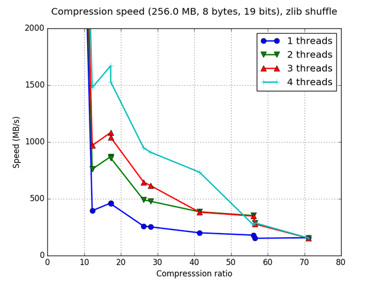
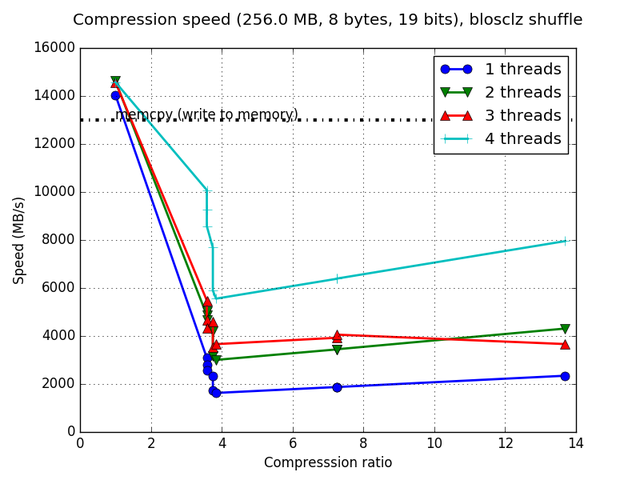

Zstd has just landed in Blosc
Zstd has just landed in Blosc
Zstd, aka Zstandard, is a new breed of compression library that promises to achieve better compression ratios than Zlib, and at better speeds too. The fact that Zstd is geared towards fast compression / decompression since the beginning was an indication for me that it could be a good fit for Blosc. After some months of experimentation with Zstd in Blosc2, I am really happy to say that I am quite impressed on how the pair performs.
And now that the Zstd format has been declared stable and that its API is maturing rapidly, it is a good time for inclusion in the Blosc1 project too. In Blosc1 there was still a couple of slots available for additional codecs, and after my positive experiences with Zstd I decided that it would be an excellent candidate to take one of the free seats (will see which one will take the last one, if any).
Beware: the Zstd support in Blosc should still be considered in beta and so it is not recommended to use this new codec in production yet. It is indeed recommended to start experimenting with it so as to see the kind of improvements that it can bring to your scenario, and specially report possible flaws back.
A compression beast for Blosc operation
As said, Zstd is meant to achieve better compression ratios than Zlib, and this is indeed the case for many situations already. But it turns out that Zstd shines specially when faced to the kind of data that is left after the shuffle (or bitshuffle) filter passes.
As for one, here it is the typical benchmark plot for compressing with Zstd on my machine (Intel Xeon E3-1245-v5 @ 3.5GHz), side-by-side with Zlib which was the codec having the best compression ratios among all the supported inside Blosc:
|
 |

As can be seen, Zstd achieves a maximum compression ratio of more than 300x for this specific dataset, which is quite a lot more than the 70x achieved by Zlib. But the coolest thing is that we are not paying a performance price for this increased compression ratio, rather the contrary, because Zstd is clearly superior (up to a 25%) in compression speed to Zlib.
But one of the most distinctive features for Blosc is its ability to decompress data very fast (sometimes faster than memcpy() as I like to remind). And look at what Zstd is able to achieve in this case:
|

With peak speeds larger than 10 GB/s, Zstd can decompress data more than 2x faster than Zlib peaks (~ 4 GB/s). And more importantly, when it comes to decompress data at the highest compression level, Zstd can do that about 6x faster than Zlib (~6 GB/s vs ~1 GB/s), which is a welcome surprise.
Not the fastest, but a nicely balanced one
Of course, Zstd is still far from the fastest codecs in Blosc. See for example how the internal BloscLZ codec can perform in this machine:
 |
|

But nevertheless, due to its impressive balance between compression ratio and speed, Zstd is called to be one of the most attractive codecs in Blosc for the near future.
As always, all these benchmarks here were made for the specific, synthetic dataset that I am using for Blosc since the beginning (mainly for reproducibility purposes). But I am pretty sure that most of the capabilities shown here will be experienced in a large variety of datasets that Blosc is meant to tackle (in fact, it would be nice if you can share your experience by adding a comment below).
Finally, my special thanks to Yann Collet, the author of Zstd (as well as LZ4, also included in Blosc) for putting his genius at the service of the community by opening not only his code, but also his mind in his amazing series of blogs about compression: http://fastcompression.blogspot.com
Appendix: What can be expected in Blosc2
Blosc2 has support for Zstd contexts and a new way to split chunks into blocks that makes codecs go faster in general. Below you have a couple of plots on how the Blosc2/Zstd couple behaves:
|

As can be seen, in Blosc2 Zstd can get peaks of more than 15 GB/s, almost reaching memcpy() speed in this machine (~17 GB/s). Also, decompression speed at the highest compression ratio can scale when throwing more threads at it (a thing that Blosc1 is not able to achieve), and easily surpasses 10 GB/s. Notice that reaching such a high speed while decompressing a buffer with a really high compression ratio (~300x) is really impressing. On his part, compression speed is a bit less (25%) than in Blosc1 but still quite competitive (and on par with Zlib).
This is really exciting news to be added on top of the new planned features for Blosc2.
Comments
Comments powered by Disqus